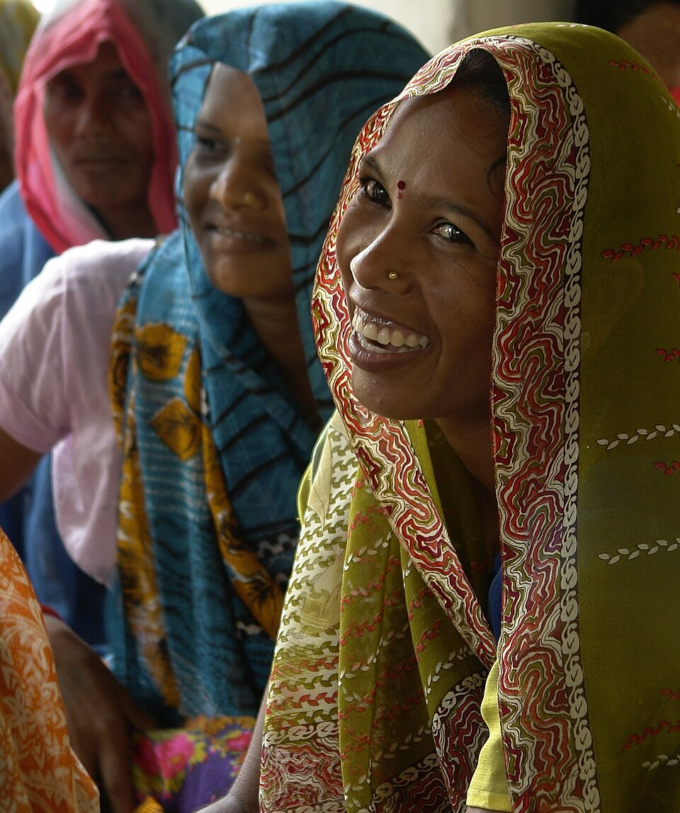

Her next chapter
starts with her.
From a first lesson to a skill she can earn from, we help women find practical ways to shape what comes next—for themselves and their families.
From a first lesson to a skill she can earn from, we help women find practical ways to shape what comes next—for themselves and their families.
A welcoming first step can turn curiosity into craft. Explore community learning and practical training designed around women’s everyday lives.
One woman’s new confidence can spark fresh ideas across a home and neighbourhood. Help make that next step easier to reach.

Make space for women to choose the skills, goals and opportunities that fit their lives.
Discover our approach →Every woman brings her own ambitions, responsibilities and knowledge. Meaningful support starts by listening, then connecting her with information and practical options she can use.
We bring learning, hands-on skills, wellbeing awareness and livelihood guidance into one community-centred conversation—without assuming that one path fits everyone.
Read about our approach →
Good community work makes room for people to shape the questions and the next steps.
Support works best when it starts with a woman's own goals and adapts as those goals take shape.
Make time to understand what matters to her, what she already knows and what may be getting in the way.
Connect information and practice to everyday decisions, interests and opportunities in the local community.
Offer clear next steps and supportive connections, while leaving decisions and direction in her hands.
These focus areas can be shaped with women and local partners to fit the interests and circumstances of each community.

Explore learning support, digital basics and information that helps women and girls make informed choices.
Explore learning themes →
Discover practical and vocational skills that can be adapted to participants' interests and local opportunities.
Explore skill themes →
Create space for respectful conversations about health, hygiene and where to find reliable support.
Explore awareness themes →
Build understanding of small-business planning, financial choices and possible routes to earning.
Explore livelihood themes →Lasting community work is built with people, not simply delivered to them. Women, families and local partners each bring knowledge that can make an activity more relevant and welcoming.
We aim to keep participation respectful, make information easier to understand and create room for women to decide what progress means in their own lives.
See the kinds of work we support →Volunteering, sharing a useful connection or asking about the work can all be a place to begin.
We won't put words in a participant's mouth. If you would like to share a reflection, idea or experience with the foundation, you can choose what to tell and how it may be used.
Get in touch to share your thoughts →These Wikimedia Commons photos show people and settings in India; they are illustrative and are not presented as Mahila Shakti Vikas Foundation participants or activities.
License terms: CC BY 2.0, CC BY-SA 3.0 and CC BY-SA 4.0.